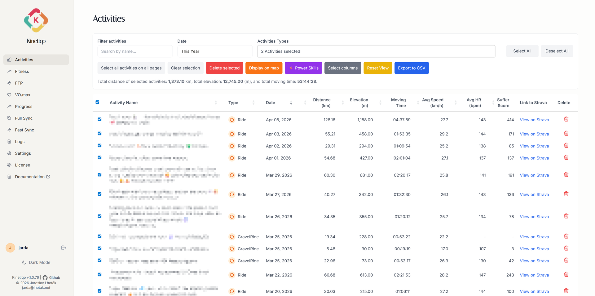

Effortlessly synchronize your entire Strava history into SQL and manage your telemetry with a DataTables 2.x activity grid.
Kinetiqo acts as a bridge between the Strava OAuth 2.0 API and your local relational database. It offers two distinct synchronization modes tailored for speed and accuracy:
Fetches only activities newer than the most recent entry stored in your database. Lightweight, instant, and ideal for automated scheduling every 15 minutes.
Audits your entire Strava activity history, imports missing historical workouts, and reconciles deleted activities. Perfect for daily off-hour maintenance.
Real-Time SSE Progress: During any sync operation, Kinetiqo streams live Server-Sent Events (SSE) progress bars to the web dashboard via HTMX reactivity, keeping you updated on payload parsing and database commits.
The central command center for your workouts. Powered by DataTables 2.x with client-side SRI protection and instant full-text filtering.
localStorage.
Select single or multiple activity rows to trigger instant action workflows:
Select individual rows or check-all to perform batch deletion from your database with CSRF confirmation.
Jump selected activities directly onto the Interactive Leaflet Map to compare GPS tracks.
Send ride data to the Power Skills Radar Chart to evaluate mean maximal power curves.
Open selected workout in the Activity Poster Builder for high-res PNG export.
Export filtered rows directly into CSV datasets or image snapshots via DataTables Buttons plugin.